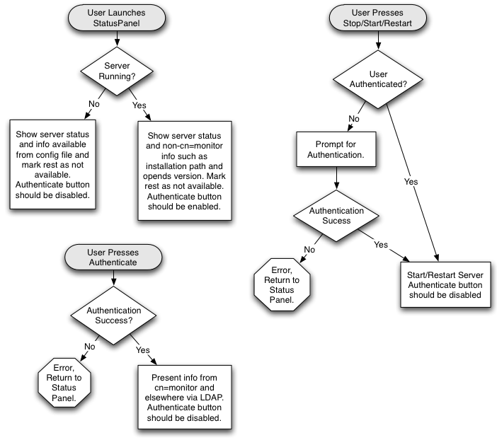
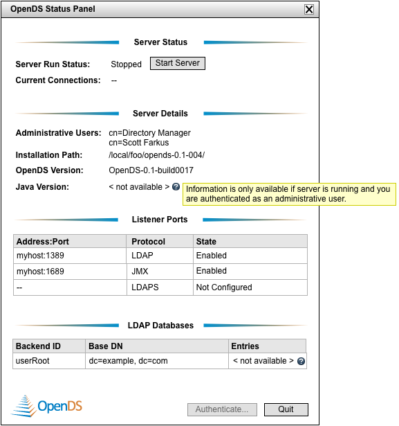
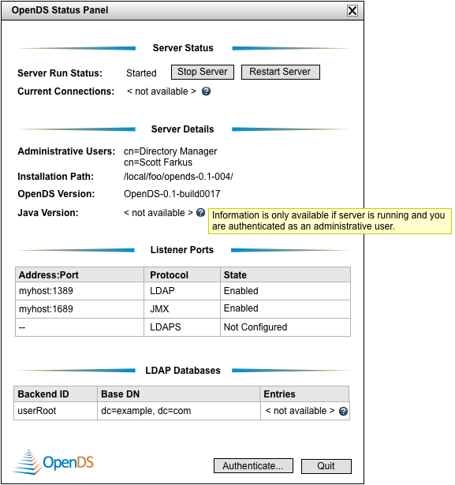
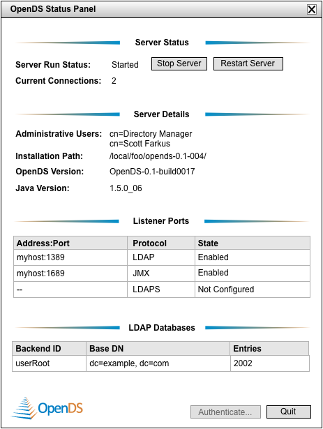
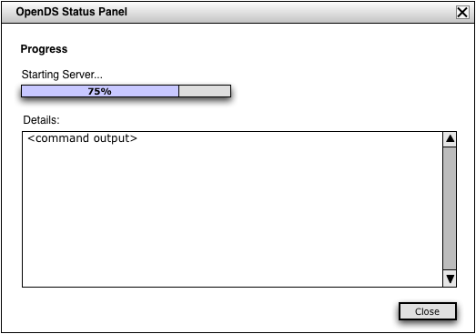
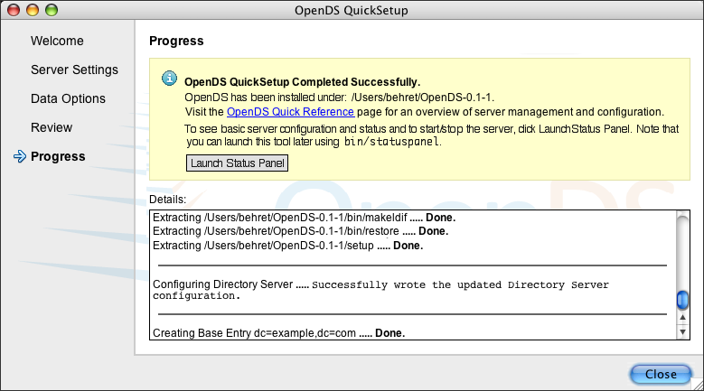

Goals
- Continue the positive first impression we give QuickSetup users by providing a graphical means to view run status, verify that the server was indeed configured as specified, and quickly start or stop the server.
- Provide a single-panel, graphical tool that presents minimal, core configuration and monitoring information.
- Make it easy to monitor and change the run status of the server.
Scope
- This tool is intended as an interim solution to fill in a gap in the "0-60" user experience. Using QuickSetup, users will end up with a configured and possibly running server and we give them a nice GUI to get to that point. But once QuickSetup has finished, users are sort of left in a "now what?" situation. In order to go any further, they'll have to do some reading on the website, poke around the directories, and issue some commands; even for something as basic as start/stop. This is not to imply that users who will explore OpenDS in any degree of depth won't need to do these things (as they most certainly will), or that doing this things is especially onerous, but I think it would be nice to provide a nice smooth transition from the install/setup phase to a verification and running-the-server phase. I believe we can make this nice transition by providing a simple sister GUI to QuickSetup. We can tie these two together by allowing the user to launch the Status Panel from the last page of QuickSetup.
- This is NOT the foundation for our long term administration GUI.
- The scope should be limited to relatively high-level, general purpose monitoring information and only core management functionality (i.e., start/stop), and we should resist the temptation to pile on additional functionality. In part, this is to set appropriate expectations about the scope of the tool (which is implied by the name "Status Panel") and also to prevent us from spending too many cycles on the short term as the expense of the long term.
Design Notes
- Status Panel only operates on its local server
- Status Panel should be able to automatically refresh to show status changes (i.e., so there is no need for a Refresh button)
- Since OpenDS works out of the box with the default configuration, the Status Panel simply displays the default configuration if the user runs this before running QuickSetup
- Status Panel provides the following:
- Run status
- Ability to start, stop and restart server -- show Stop and Restart if started and Start if stopped
- Current number of connections -- display "--" if server is stopped
- Administrative user DNs -- display each on a new line
- Installation path
- OpenDS version
- Java version -- display "<not available>" for Entries if server is stopped
- Configured Listeners
- LDAP address:ports and state (enabled | disabled | not configured)
- LDAPS address:ports and state (enabled | disabled | not configured)
- JMX address:ports and state (enabled | disabled | not configured)
- If a particular protocol is not configured, display "--" for address:port
- Listing of user-created backends (called LDAP Databases here) including Backend ID, Base DN, and Number of Entries -- display "<not available>" for Entries if server is stopped
- Clicking on OpenDS logo should take user to opends.dev.java.net home page.
- Window should be completely resizeable. When resized, table widths grow proportionally, section headers stay centered in window, OpenDS logo stays bottom and left-aligned and Quit stays bottom and right-aligned.
- Scrollbars should sprout 10px above Quit button so that Quit and OpenDS Logo are always visible. Default window size should accomodate default post-QuickSetup configuration + 80px of extra space assuming the addition of a couple more ldap databases.
Task Flows
Launch from QuickSetup
- User clicks link on "Launch Status Panel" button on final page of QuickSetup
- Status Panel window appears
Launch from installed server
- cd to the directory containing the server files
- Launch Setup Panel tool via 'bin/statuspanel' command in terminal window
- Status Panel window appears
Starting or stopping the server
- User clicks Start Server or Stop Server button in panel
- Progress dialog window launches and shows detailed output of operation
- User closes progress dialog
- Current run status shown in Status Panel
System Flows

Design Wireframes
If server is not running:

If server is running and user has not authenticated as an administrative user:

If server is running and user is authenticated as administrative user:



Revision History
| 5-Dec 2006 |
Brian Ehret |
First draft of document |
| 6-Dec 2006 |
Brian Ehret |
Added information to panel design including number of connections, memory usage, and java version |
| 7-Dec 2006 |
Brian Ehret |
Removed memory usage statistics, created listener ports section and table, handled multiple administrative users, added detail to Design Notes section |